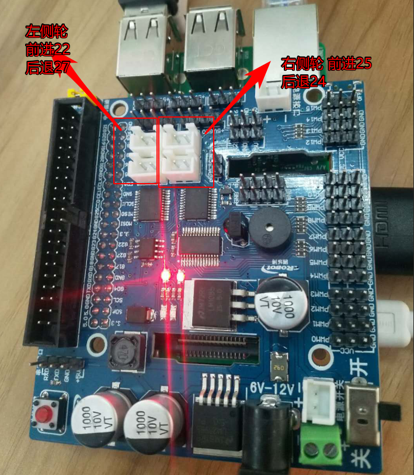

控制小车的轮子
一个轮子的控制
- 把车轮和点击如上图一样接好，把线插到如下图的红色框框内，

- 左侧车轮前进的代码
# coding=utf-8
import RPi.GPIO as GPIO
import time
# 引脚 编号
PWMA = 18 # 左侧
AIN1 = 22 #
AIN2 = 27 #
PWMB = 23 # 右侧
BIN1 = 25 #
BIN2 = 24 #
# 当你有一个以上的脚本/电路使用你的Raspberry Pi的GPIO接口时会提示警告信息。
# 因此，你也可以用以下脚本设置是否提示警告信息
GPIO.setwarnings(False) # 是否提示引脚被复用警告
GPIO.setmode(GPIO.BCM) # 工作模式 BCM(数字编号模式) 还有一种BOARD模式(板载编号模式)
GPIO.setup(AIN2, GPIO.OUT) # 设置输出
GPIO.setup(AIN1, GPIO.OUT) # 设置输出
GPIO.setup(PWMA, GPIO.OUT)
#设置左侧轮子 100是频率 占空比建立在 一定的频率上 频率 太低小车会走走停停
L_Motor = GPIO.PWM(PWMA, 100)
#设置左侧轮子 初始占空比 这里可以理解为小车的速度了
L_Motor.start(0)
if __name__ == '__main__':
try:
L_Motor.ChangeDutyCycle(100) # 更改占空比： 范围：0.0 <= dc >= 100.0 可以影响速度
while True:
GPIO.output(AIN2, True) # AIN2 左后轮 前进
GPIO.output(AIN1, False) # AIN2 左前轮 后退
time.sleep(1)
GPIO.output(AIN2, False) # AIN2 左后轮 后退
GPIO.output(AIN1, True) # AIN2 左前轮 前进
time.sleep(1)
except KeyboardInterrupt:
GPIO.cleanup() # 清理所有端口
- 多个轮子的控制
# coding=utf-8
import RPi.GPIO as GPIO
import time
# 引脚 编号
PWMA = 18 # 左侧轮
AIN1 = 22 # 左轮前进
AIN2 = 27 # 左轮后退
PWMB = 23 # 右侧轮
BIN1 = 25 # 右轮前进
BIN2 = 24 # 右轮后退
def t_up(speed, t_time):
"""
小车向前的代码
:param speed: 速度
:param t_time:跑的时间
:return:
"""
L_Motor.ChangeDutyCycle(speed) # 更改占空比： 范围：0.0 <= dc >= 100.0 可以影响速度
GPIO.output(AIN2, False) # AIN2 左轮后退
GPIO.output(AIN1, True) # AIN1 左轮前进
R_Motor.ChangeDutyCycle(speed)
GPIO.output(BIN2, False) # BIN2 右轮后退
GPIO.output(BIN1, True) # BIN1 右轮前进
time.sleep(t_time)
def t_down(speed, t_time):
"""
小车向后的代码
:param speed: 速度
:param t_time:跑的时间
:return:
"""
L_Motor.ChangeDutyCycle(speed)
GPIO.output(AIN2, True) # AIN2
GPIO.output(AIN1, False) # AIN1
R_Motor.ChangeDutyCycle(speed)
GPIO.output(BIN2, True) # BIN2
GPIO.output(BIN1, False) # BIN1
time.sleep(t_time)
def t_left(speed, t_time):
"""
左车轮后退 右车轮前进 就可以让小车左转
"""
L_Motor.ChangeDutyCycle(speed)
GPIO.output(AIN2, True) # AIN2 左车轮后退
GPIO.output(AIN1, False) # AIN1
R_Motor.ChangeDutyCycle(speed)
GPIO.output(BIN2, False) # BIN2
GPIO.output(BIN1, True) # BIN1 右车轮前进
time.sleep(t_time)
def t_right(speed, t_time):
"""
左轮前进 右车轮后退 就可以让小车右转
"""
L_Motor.ChangeDutyCycle(speed)
GPIO.output(AIN2, False) # AIN2
GPIO.output(AIN1, True) # AIN1 左车轮前进
R_Motor.ChangeDutyCycle(speed)
GPIO.output(BIN2, True) # BIN2 右车轮后退
GPIO.output(BIN1, False) # BIN1
time.sleep(t_time)
def t_stop(t_time):
"""
小车停止
"""
L_Motor.ChangeDutyCycle(0)
GPIO.output(AIN2, False) # AIN2
GPIO.output(AIN1, False) # AIN1
R_Motor.ChangeDutyCycle(0)
GPIO.output(BIN2, False) # BIN2
GPIO.output(BIN1, False) # BIN1
time.sleep(t_time)
# 当你有一个以上的脚本/电路使用你的Raspberry Pi的GPIO接口时会提示警告信息。
# 因此，你也可以用以下脚本设置是否提示警告信息
GPIO.setwarnings(False) # 是否提示引脚被复用警告
GPIO.setmode(GPIO.BCM) # 工作模式 BCM(数字编号模式) 还有一种BOARD模式(板载编号模式)
GPIO.setup(AIN2, GPIO.OUT) # 设置输出
GPIO.setup(AIN1, GPIO.OUT)
GPIO.setup(PWMA, GPIO.OUT)
GPIO.setup(BIN1, GPIO.OUT)
GPIO.setup(BIN2, GPIO.OUT)
GPIO.setup(PWMB, GPIO.OUT)
# 设置左侧轮子 100是频率 占空比建立在 一定的频率上 频率 太低小车会走走停停
L_Motor = GPIO.PWM(PWMA, 100)
L_Motor.start(0)
# 设置右侧轮子
R_Motor = GPIO.PWM(PWMB, 100)
R_Motor.start(0)
if __name__ == '__main__':
try:
while True:
t_up(100, 3) # 向前
t_down(100, 3) # 向后
t_left(100, 3) # 左转
t_right(100, 3) # 右转
t_stop(3) # 停下
except KeyboardInterrupt:
GPIO.cleanup() # 清理所有端口